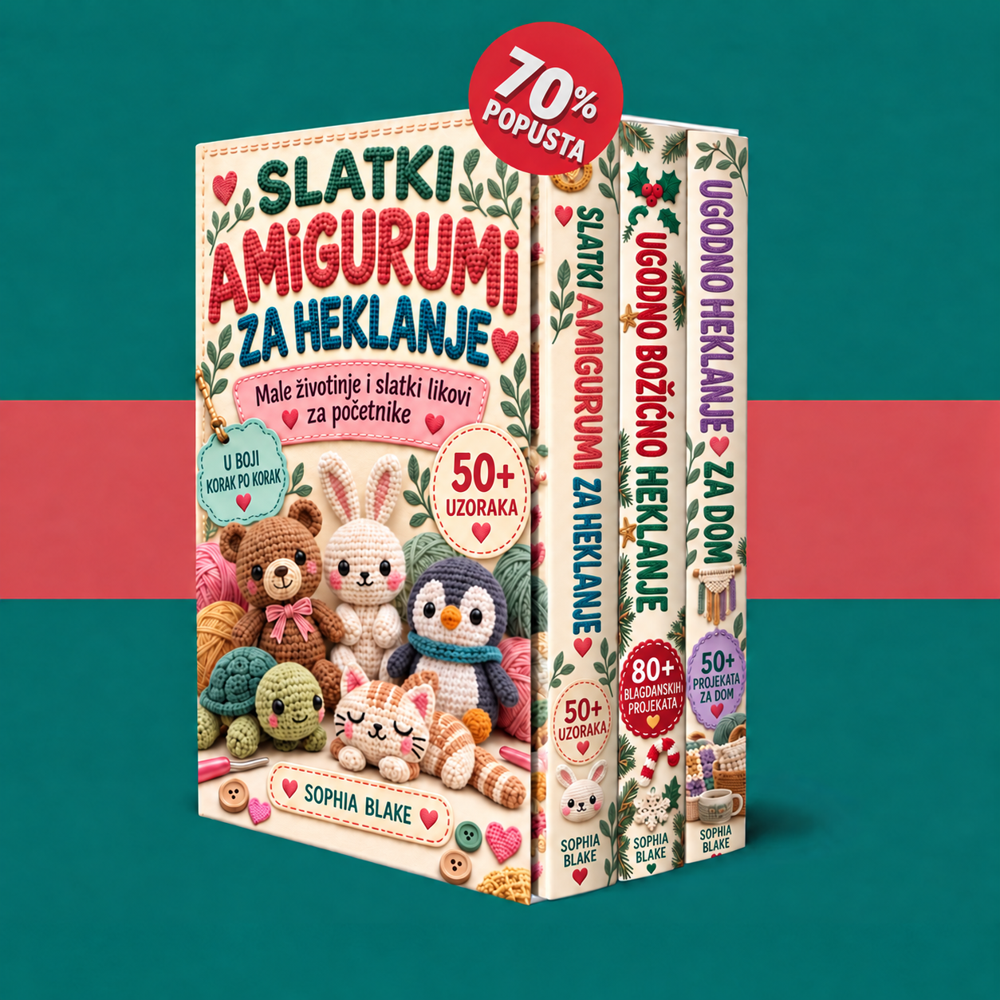

Dobro došli u svoju zbirku. Istražite tri knjige i započnite s malim životinjama, božićnim ukrasima ili ugodnim projektima za dom.

Učitavanje knjiga…
Omogućite JavaScript za korištenje prostora za članove. PDF-ove možete otvoriti i putem poveznica ispod.